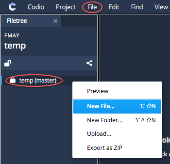
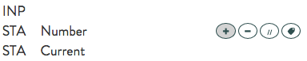
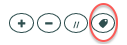
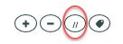
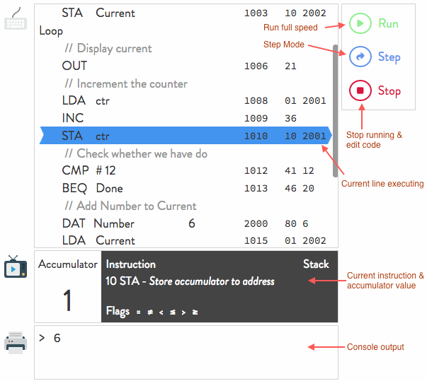

Additional resources¶
Crunch¶
Crunch is a modern, full-featured alternative to Little Man Computer. It is testament to Little Man Computer that it is still being used many years later. We have taken inspiration from it and given it a modern feel and a more complete instruction set that allows you to focus on thinking about your algorithm rather than having to learn the syntax.
Warning
Pair Programming should not be used for Crunch assignments.
Crunch Course¶
We have built a 3 assignment Course that combines teaching materials with over 20 challenges of gradually increasing complexity. This is a great resource for teachers wanting to teach the basics of Assembly Language programming as well as computational thinking.
From the Dashboard, go to Resources and then look for Crunch - Little Man Computer on Steroids.
Lexikon¶
We recommend you use Codio’s Lexikon feature to get inline help on Crunch usage and commands. You can find the Lexikon in the Tools menu. Once it appears, select the dropdown list on the right side and select Crunch. You can then search for commands. Try entering Overview in the search box for an overview of all the Crunch commands.
Crunch Module¶
We strongly recommend you use the Crunch module to teach Crunch. The Module can be found in the Crunch - Little Man Computer on Steroids Course. From the Dashboard, go to Resources and then look for Crunch - Little Man Computer on Steroids, within that course you will find the Crunch module and can add as a course to your account.
Video Overview¶
Creating a Crunch file¶
If you want to create your own Crunch files in a Codio project, create a new file of type Crunch by giving it the .crunch extension.
A new file is created from either the File menu or by right-clicking on the project name line in the file tree.

Saving changes¶
All changes are changed automatically, so you don’t have to explicitly save.
Source Code Editing¶
Editing source code is done by hovering over a line until the popup button bar appears.

If you have not yet added any code, then you should see the button bar already there in the top of the code area.
Click on the + to add a new instruction.
Instructions¶
Crunch comes with a good base set of instructions. To see the full set of instructions, along with explanations for each one, add a new line as explained above. You can then scroll through the list of available instructions. There is also a complete Lexicon available. Go to Tools>Lexicon and select the Crunch option to search.
The following instructions are not available in Little Man Computer and provide a more complete experience.
BGTbranch if greater thanBGEbranch if greater than or equal toBLTbranch if less thanBLEbranch if less than or equal toBEQbranch if equal toBNEbranch if not equal toJMPjump to a labelPSHpush accumulator onto a stackPOPpop accumulator off the stackMULmultiply the accumulator by a literal value of a value stored in a memory locationINCincrement the accumulator by 1DECdecrement the accumulator by 1
You can access the full instruction list from the dropdown when you add a new instruction or you can simply type the instruction mnemonic (3 letter instruction) and press enter.
Adding labels¶
Instructions such as BEQ, BNE, BLT, BLE, BGT, BGE, JMP require that you jump to a specific label if the condition is met. You can add such a label by pressing the add label button from the floating toolbar.

Enter a label name that can be used as a target for the above listed instructions.
Comments¶
If you want to add comments to your code, click the comment button, circled below, and you can add a comment description into the code.

Selecting lines of code - deleting or moving¶
If you want to select one or more lines of code (to delete or move to another location) then you should do the following
click on a line you want to select but make sure you click away from a field that requires input
to select more multiple lines, then press the shift key and click on another line in order that all lines between the first line and this line are selected. You should then see the multiple lines highlighted.
Once you have the one or more lines selected, you can either delete all lines (by pressing delete from the toolbar on the right) or by dragging the selected lines to the required destination.
Running your code¶
Step / debug mode¶
One very nice way of running your code is to step through it line by line so you can see how it executes at your own pace. To do this, press the Step button on the right hand side. It will immediately start executing.
At any time, you can press the Run button to run to completion at full speed.

Stack contents¶
If you push the accumulator to the stack using the PSH command, the stack content is displayed in a scrollable window within the display below the code window. As you POP items off the stack, you will see the topmost item being removed.
Undo & redo¶
You can undo and redo changes using the buttons on the right hand side.